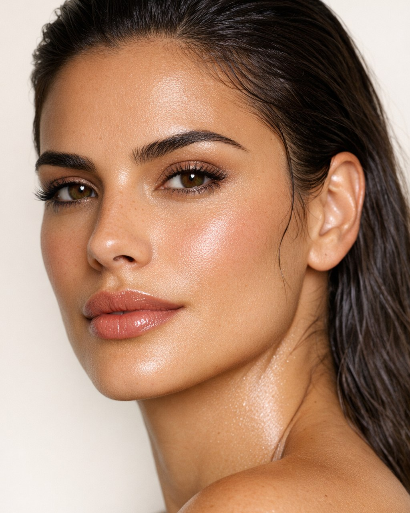

Aplique a técnica certa pra se tornar referência e ganhar confiança em harmonização facial
Conheça os métodos que te permitem ler a simetria e a proporção de cada rosto e entregar o resultado que faz a paciente voltar e indicar. Com análise de casos reais e a apresentação da nossa mentoria aceleradora.

Conheça a mentoria em 1 minuto
No webinário a gente abre tudo isso ao vivo, com caso real e espaço pra sua pergunta.
Você já aplica. Já tem paciente, já tem resultado pra mostrar. [Agora é hora de subir de nível.]
Quem se destaca na harmonização enxerga o rosto inteiro antes de pegar a seringa. Lê simetria, proporção e os terços da face, e [sabe o que cada ponto vai entregar.]
É esse olhar que faz a paciente confiar no plano completo, voltar pra próxima etapa e [falar o seu nome pras amigas.]
E esse olhar se treina, com paciente na cadeira e alguém experiente do lado.
A técnica por trás de um resultado que chama atenção
Análise facial
Simetria, proporção e os terços da face, pra enxergar o que o rosto pede.
Planejamento full face
O plano completo do rosto, montado por prioridade.
Planos de aplicação
A profundidade certa pra cada região e cada produto.
Agulha e cânula
Quando usar cada uma, e por quê.
Anatomia aplicada
As zonas de risco do rosto, pra aplicar com tranquilidade.
Preenchimento, toxina e bioestimulador
Do lábio ao caso completo, com a sua mão.
Segurança a gente ganha aplicando
Por isso aqui você fica com a seringa na mão e a paciente na cadeira, e a gente fica do lado olhando e dizendo “vai, é aí mesmo”.
Aqui quem aplica é você
Você avalia o rosto e monta o plano.
A gente olha junto antes de qualquer agulha.
Você aplica, e a gente fica do lado do começo ao fim.
Você sai com mais casos feitos pela sua mão.
Capacitação que aparece na agenda e no faturamento
Você indica o plano completo
E entrega, porque domina cada etapa dele.
A paciente confia, volta e indica
Resultado bonito e seguro é o que mais traz paciente nova.
O faturamento acompanha
Harmonização é dos procedimentos de maior valor do consultório. Um full face a mais por semana já muda o seu mês.
Ouça de quem já passou por aqui

Dra. Mariane Botti e Dr. Loan Tomiello
A gente faz harmonização há mais de 6 anos e hoje conduz turmas em Porto Alegre e Florianópolis. Na mentoria a gente fica na sala com você, olhando cada ponto. E no webinário somos nós dois dando a aula ao vivo.
Como se tornar o profissional de harmonização que as pacientes procuram pelo nome
Uma aula com a Dra. Mariane Botti e o Dr. Loan Tomiello, pra você decidir com calma se a mentoria é pra você.
Quero participar do webinário- A leitura de rosto que a gente faz antes de pegar na seringa, mostrada em um caso real, do começo ao fim.
- Os erros de marcação que mais aparecem em quem já aplica, e como corrigir cada um.
- Como apresentar o plano full face pra paciente entender, confiar e fechar o plano inteiro.
- O que fazer quando acontece uma intercorrência, passo a passo, pra você aplicar tranquilo.
- A conta da mentoria: quantos procedimentos pagam o seu investimento.
- A prática por dentro: as pacientes, os produtos e o que você aplica com a gente do lado.
No final a gente responde as suas perguntas ao vivo e passa as datas da próxima turma.